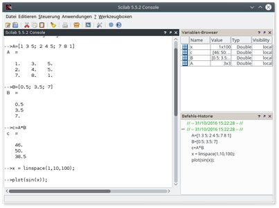
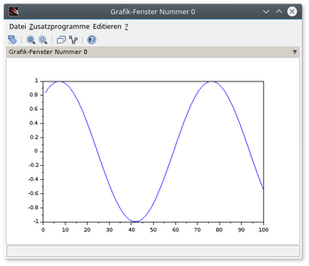
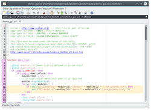
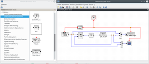

Scilab
Dieser Artikel wurde für die folgenden Ubuntu-Versionen getestet:
Ubuntu 16.04 Xenial Xerus
Zum Verständnis dieses Artikels sind folgende Seiten hilfreich:
Scilab  ist ein umfangreiches, leistungsfähiges Open-Source-Software-Paket für Anwendungen aus der numerischen Mathematik. Die Entwicklung wurde 1990 am "Institut national de recherche en informatique et en automatique" (INRIA
ist ein umfangreiches, leistungsfähiges Open-Source-Software-Paket für Anwendungen aus der numerischen Mathematik. Die Entwicklung wurde 1990 am "Institut national de recherche en informatique et en automatique" (INRIA  ) in Frankreich begonnen. Seit 2003 wird die Entwicklung vom Scilab Konsortium unter Federführung des INRIA vorangetrieben. Scilab ist genauso wie Octave eine Alternative zum kommerziellen Matlab. Die Funktionalität und Syntax von Scilab ist zu weiten Teilen mit der von Matlab identisch. Es gibt Konverter, mit denen Matlab-Skripte in die Scilab-Syntax umgewandelt werden können. Scilab wird unter anderem für technische und wissenschaftliche Anwendungen in Lehre, Forschung und Industrie eingesetzt.
) in Frankreich begonnen. Seit 2003 wird die Entwicklung vom Scilab Konsortium unter Federführung des INRIA vorangetrieben. Scilab ist genauso wie Octave eine Alternative zum kommerziellen Matlab. Die Funktionalität und Syntax von Scilab ist zu weiten Teilen mit der von Matlab identisch. Es gibt Konverter, mit denen Matlab-Skripte in die Scilab-Syntax umgewandelt werden können. Scilab wird unter anderem für technische und wissenschaftliche Anwendungen in Lehre, Forschung und Industrie eingesetzt.
Scilab beinhaltet das Programmpaket Xcos (ehemals Scicos), dessen Funktionalität mit der für Matlab erhältlichen Erweiterung Simulink vergleichbar ist. Mit Xcos können dynamische Systeme graphisch modelliert und simuliert werden.
|  |
| Scilab |
|  |
| Mit Scilab erstellter Funktionsgraph |
Scilab stellt mit Xcos eine Funktionspalette bereit, welche die folgenden Bereiche abgedeckt:
2D- und 3D-Plots aller gängigen Formate auf Grundlage von Gnuplot
numerische Algebra
Polynom-Berechnungen
Statistik
Regelungstechnik
digitale Signalverarbeitung
Installation¶
Scilab ist in den offiziellen Paketquellen enthalten. Um Scilab zu nutzen, muss folgendes Paket installiert [1] werden:
scilab (universe)
 mit apturl
mit apturl
Paketliste zum Kopieren:
sudo apt-get install scilab
sudo aptitude install scilab
Die Dokumentation zu Scilab ist in folgendem Paket enthalten:
scilab-doc (universe)
mit apturl
Paketliste zum Kopieren:
sudo apt-get install scilab-doc
sudo aptitude install scilab-doc
Will man zusätzlich die "Image and Video Processing Toolbox" von Scilab nutzen, so braucht man das Paket:
scilab-sivp (universe)
mit apturl
Paketliste zum Kopieren:
sudo apt-get install scilab-sivp
sudo aptitude install scilab-sivp
Benutzung¶
Die Benutzung von Scilab erfolgt weitestgehend über die Kommandozeile oder über den eingebauten Editor. In folgendem einfachen Beispielaufruf wird eine Matrix und ein Vektor definiert und anschließend eine Multiplikation durchgeführt:
--> A = [1 3 5; 2 4 6; 7 8 1]; --> b = [0.5; 3.5; 7]; --> c = A*b c = 46.000 57.000 38.500
Ebenso können berechnete Werte graphisch ausgegeben werden. Als Beispiel soll ein Sinus dienen:
--> x = linspace(1,10,100); // x als Vektor mit den Werten von 1 bis 10 in 100 Schritten vereinbaren --> plot(sin(x)); // Den Sinus von x grafisch ausgeben
|  |
| SciNotes |
SciNotes¶
Der Editor SciNotes kann über das entsprechende Symbol in der Werkzeugleiste geöffnet werden. Hier kann man wie in Matlab oder Octave numerische Berechnungen programmieren und diese dann in Scilab ausführen lassen. Scilab kann die von Matlab/Octave kommenden m-Files zwar nicht direkt ausführen, stellt aber eine Funktion zum Importieren dieser Dateien bereit. Hierbei werden die Matlab/Octave-Befehle in die Scilab-Syntax übersetzt, soweit sie nicht übereinstimmen. Trotz allem kann Scilab manche Matlab/Octave-Befehle nicht übersetzten. Hier muss noch von Hand nachgearbeitet werden.
|  |
| Xcos |
Xcos (ehemals Scicos)¶
Die Simulink (Matlab) ähnlich Toolbox Xcos kann über den Befehl
xcos
aus Scilab heraus starten. Hierzu finden sich ebenfalls viele Beispiele, die den Einstieg in die Software erleichtern.
Scilab Image Processing Toolbox¶
Die Image Processing Toolbox sivp von Scilab kann über das Menü "Werkzeugboxen -> sivp" gestartet werden. So stehen nun in Scilab Funktionen zur Bildbearbeitung bereit. Hierbei bietet sich auch die Scilab Wavelet Toolbox [3] an. Mit dieser können Berechnungen zur Bilddatenkompression, wie z.B die Diskrete Wavelet-Transformation (JPEG2000) etc. durchgeführt werden.
- Erstellt mit Inyoka
-
 2004 – 2017 ubuntuusers.de • Einige Rechte vorbehalten
2004 – 2017 ubuntuusers.de • Einige Rechte vorbehalten
Lizenz • Kontakt • Datenschutz • Impressum • Serverstatus -
Serverhousing gespendet von